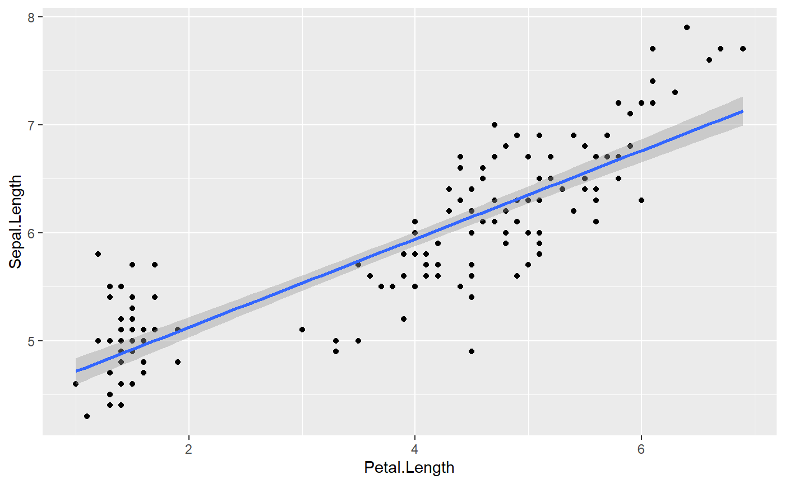
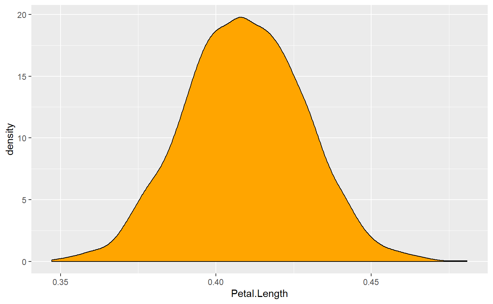
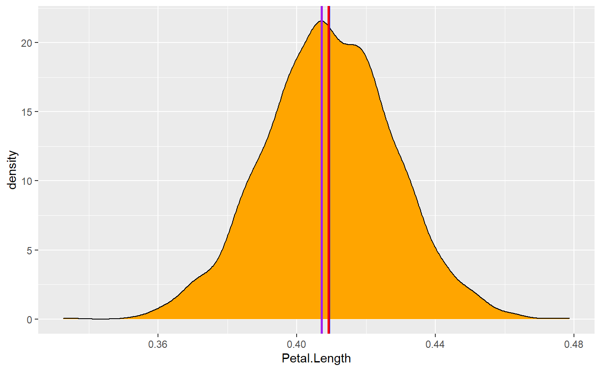
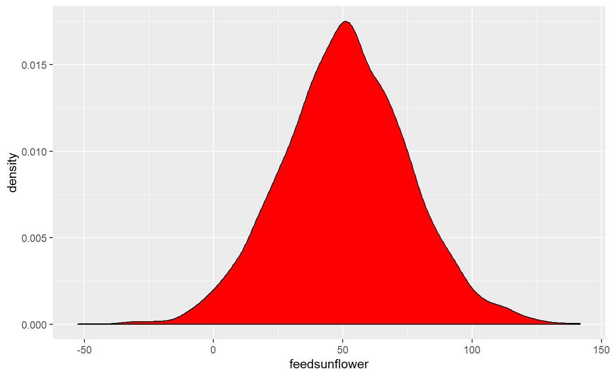

This vignette can be referred to by citing the package:
- Makowski, D., Ben-Shachar M. S. & Lüdecke, D. (2019). Understand and Describe Bayesian Models and Posterior Distributions using bayestestR. Available from https://github.com/easystats/bayestestR. DOI: 10.5281/zenodo.2556486.
Now that you’ve read the Get started section, let’s dive in the subtleties of Bayesian modelling using R.
Loading the packages
Once you’ve installed the necessary packages, we can load rstanarm (to fit the models), bayestestR (to compute useful indices) and insight (to access the parameters).
Simple linear model (aka a regression)
We will begin by conducting a simple linear regression to test the relationship between Petal.Length (our predictor, or independent, variable) and Sepal.Length (our response, or dependent, variable) from the iris dataset which is included by default in R.
Fitting the model
Let’s start by fitting the frequentist version of the model, just to have a reference point:
>
> Call:
> lm(formula = Sepal.Length ~ Petal.Length, data = iris)
>
> Residuals:
> Min 1Q Median 3Q Max
> -1.2468 -0.2966 -0.0152 0.2768 1.0027
>
> Coefficients:
> Estimate Std. Error t value Pr(>|t|)
> (Intercept) 4.3066 0.0784 54.9 <2e-16 ***
> Petal.Length 0.4089 0.0189 21.6 <2e-16 ***
> ---
> Signif. codes: 0 '***' 0.001 '**' 0.01 '*' 0.05 '.' 0.1 ' ' 1
>
> Residual standard error: 0.41 on 148 degrees of freedom
> Multiple R-squared: 0.76, Adjusted R-squared: 0.758
> F-statistic: 469 on 1 and 148 DF, p-value: <2e-16In this model, the linear relationship between Petal.Length and Sepal.Length is positive and significant (beta = 0.41, t(148) = 21.6, p < .001). This means that for each one-unit increase in Petal.Length (the predictor), you can expect Sepal.Length (the response) to increase by 0.41. This effect can be visualized by plotting the predictor values on the x axis and the response values as y using the ggplot2 package:
library(ggplot2) # Load the package
# The ggplot function takes the data as argument, and then the variables
# related to aesthetic features such as the x and y axes.
ggplot(iris, aes(x=Petal.Length, y=Sepal.Length)) +
geom_point() + # This adds the points
geom_smooth(method="lm") # This adds a regression line
Now let’s fit a Bayesian version of the model by using the stan_glm function in the rstanarm package:
You can see the sampling algorithm being run.
Extracting the posterior
Once it is done, let us extract the parameters (i.e., coefficients) of the model.
> (Intercept) Petal.Length
> 1 4.4 0.40
> 2 4.5 0.37
> 3 4.3 0.41
> 4 4.4 0.40
> 5 4.3 0.41
> 6 4.3 0.42As we can see, the parameters take the form of a lengthy dataframe with two columns, corresponding to the intercept and the effect of Petal.Length. These columns contain the posterior distributions of these two parameters. In simple terms, the posterior distribution is a set of different plausible values for each parameter.
About posterior draws
Let’s look at the length of the posteriors.
> [1] 4000Why is the size 4000, and not more or less?
First of all, these observations (the rows) are usually referred to as posterior draws. The underlying idea is that the Bayesian sampling algorithm (e.g., Monte Carlo Markov Chains - MCMC) will draw from the hidden true posterior distribution. Thus, it is through these posterior draws that we can estimate the underlying true posterior distribution. Therefore, the more draws you have, the better your estimation of the posterior distribution. However, increased draws also means longer computation time.
If we look at the documentation (?sampling) for the rstanarm "sampling" algorithm used by default in the model above, we can see several parameters that influence the number of posterior draws. By default, there are 4 chains (you can see it as distinct sampling runs), that each create 2000 iter (draws). However, only half of these iterations are kept, as half are used for warm-up (the convergence of the algorithm). Thus, the total is 4 chains * (2000 iterations - 1000 warm-up) = 4000 posterior draws. We can change that, for instance:
model <- stan_glm(Sepal.Length ~ Petal.Length, data=iris, chains = 2, iter = 1000, warmup = 250)
nrow(insight::get_parameters(model)) # Size (number of rows)[1] 1500In this case, as would be expected, we have 2 chains * (1000 iterations - 250 warm-up) = 1500 posterior draws. However, let’s keep our first model with the default setup.
Visualizing the posterior distribution
Now that we’ve understood where these values come from, let’s look at them. We will start by visualizing the posterior distribution of our parameter of interest, the effect of Petal.Length.

This distribution represents the probability (the y axis) of different effects (the x axis). The central values are more probable than the extreme values. As you can see, this distribution ranges from about 0.35 to 0.50, with the bulk of it being at around 0.41.
Congrats! You’ve just described your posterior distribution.
And this is at the heart of Bayesian analysis. We don’t need p-values, t-values or degrees of freedom: everything is there, within this posterior distribution.
Our description above is consistent with the values obtained from the frequentist regression (which resulted in a beta of 0.41). This is reassuring! Indeed, in most cases a Bayesian analysis does not drastically change the results or their interpretation. Rather, it makes the results more interpretable and intuitive, and eaasier to understand and describe.
We can now go ahead and precisely characterize this posterior distribution.
Describing the Posterior
Unfortunately, it is often not practical to report the whole posterior distributions as graphs. We need to find a concise way to summarize it. We recommend to describe the posterior distribution with 3 elements:
- A point-estimate which is a one-value summary (similar to the beta in frequentist regressions).
- A credible interval representing the associated uncertainty.
- Some indices of significance, giving information about the relative importance of this effect.
Point-estimate
What single value can best represent my posterior distribution?
Centrality indices, such as the mean, the median or the mode are usually used as point-estimates - but what’s the difference between them? Let’s answer this by first inspecting the mean:
> [1] 0.41This is close to the frequentist beta. But as we know, the mean is quite sensitive to outliers or extremes values. Maybe the median could be more robust?
> [1] 0.41Well, this is very close to the mean (and identical when rounding the values). Maybe we could take the mode, that is, the peak of the posterior distribution? In the Bayesian framework, this value is called the Maximum A Posteriori (MAP). Let’s see:
> MAP = 0.41They are all very close! Let’s visualize these values on the posterior distribution:
ggplot(posteriors, aes(x = Petal.Length)) +
geom_density(fill = "orange") +
# The mean in blue
geom_vline(xintercept=mean(posteriors$Petal.Length), color="blue", size=1) +
# The median in red
geom_vline(xintercept=median(posteriors$Petal.Length), color="red", size=1) +
# The MAP in purple
geom_vline(xintercept=map_estimate(posteriors$Petal.Length), color="purple", size=1)
Well, all these values give very similar results. Thus, we will choose the median, as this value has a direct meaning from a probabilistic perspective: there is 50% chance that the true effect is higher and 50% chance that the effect is lower (as it divides the distribution in two equal parts).
Uncertainty
Now that the have a point-estimate, we have to describe the uncertainty. We could compute the range:
> [1] 0.35 0.48But does it make sense to include all these extreme values? Probably not. Thus, we will compute a credible interval. Long story short, it’s kind of similar to a frequentist confidence interval, but easier to interpret and easier to compute — and it makes more sense.
We will compute this credible interval based on the Highest Density Interval (HDI). It will give us the range containing the 89% most probable effect values. Note that we will use 89% CIs instead of 95% CIs (as in the frequentist framework), as the 89% level gives more stable results (Kruschke 2014) and reminds us about the arbitrarity of such conventions (McElreath 2018).
> # Highest Density Interval
>
> 89% HDI
> [0.38, 0.44]Nice, so we can conclude that the effect has 89% chance of falling within the [0.38, 0.44] range. We have just computed the two most important pieces of information for describing our effects.
Effect significance
However, in many scientific fields it not sufficient to simply describe the effects. Scientists also want to know if this effect has significance in practical or statistical terms, or in other words, whether the effect is important. For instnace, is the effect different from 0? So how do we assess the significance of an effect. How can we do this?
Well, in this particular case, it is very eloquent: all possible effect values (i.e., the whole posterior distribution) are positive and over 0.35, which is already substantial evidence the effect is not zero.
But still, we want some objective decision criterion, to say if yes or no the effect is ‘significant’. One approach, similar to the frequentist framework, would be to see if the Credible Interval contains 0. If it is not the case, that would mean that our effect is ‘significant’.
But this index is not very fine-grained, isn’t it? Can we do better? Yes.
A linear model with a categorical predictor
Imagine for a moment you are interested in how the weight of chickens varies depending on two different feed types. For this exampe, we will start by selecting from the chickwts dataset (available in base R) two feed types of interest for us (we do have peculiar interests): meat meals and sunflowers.
Data preparation and model fitting
library(dplyr)
# We keep only rows for which feed is meatmeal or sunflower
data <- chickwts %>%
filter(feed %in% c("meatmeal", "sunflower"))Let’s run another Bayesian regression to predict the weight with the two types of feed type.
Posterior description
posteriors <- insight::get_parameters(model)
ggplot(posteriors, aes(x=feedsunflower)) +
geom_density(fill = "red")
This represents the posterior distribution of the difference between meatmeal and sunflowers. Seems that the difference is rather positive (the values seems concentrated on the right side of 0)… Eating sunflowers makes you more fat (at least, if you’re a chicken). But, by how much? Let us compute the median and the CI:
> [1] 51> # Highest Density Interval
>
> 89% HDI
> [7.77, 87.66]It makes you fat by around 51 grams (the median). However, the uncertainty is quite high: there is 89% chance that the difference between the two feed types is between 7.77 and 87.66.
Is this effect different from 0?
ROPE Percentage
Testing whether this distribution is different from 0 doesn’t make sense, as 0 is a single value (and the probability that any distribution is different from a single value is infinite).
However, one way to assess significance could be to define an area around 0, which will consider as practically equivalent to zero (i.e., absence of, or negligible, effect). This is called the Region of Practical Equivalence (ROPE), and is one way of testing the significance of parameters.
How can we define this region?
Driing driiiing
– The easystats team speaking. How can we help?
– I am Prof. Sanders. An expert in chicks… I mean chickens. Just calling to let you know that based on my expert knowledge, an effect between -20 and 20 is negligible. Bye.
Well, that’s convenient. Now we know that we can define the ROPE as the [-20, 20] range. All effects within this range are considered as null (negligible). We can now compute the proportion of the 89% most probable values (the 89% CI) which are not null, i.e., which are outside this range.
> # Proportion of samples inside the ROPE [-20.00, 20.00]:
>
> inside ROPE
> 7.75 %7.75% of the 89% CI can be considered as null. Is that a lot? Based on our guidelines, yes, it is too much. Based on this particular definition of ROPE, we conclude that this effect is not significant (the probability of being negligible is too high).
Although, to be honest, I have some doubts about this Prof. Sanders. I don’t really trust his definition of ROPE. Is there a more objective way of defining it?

Prof. Sanders giving default values to define the Region of Practical Equivalence (ROPE).
Yes. One of the practice is for instance to use the tenth (1/10 = 0.1) of the standard deviation (SD) of the response variable, which can be considered as a “negligible” effect size (Cohen 1988).
> [1] -6.2 6.2Let’s redefine our ROPE as the region within the [-6.2, 6.2] range. Note that this can be directly obtained by the rope_range function :)
> [1] -6.2 6.2Let’s recompute the percentage in ROPE:
> # Proportion of samples inside the ROPE [-6.17, 6.17]:
>
> inside ROPE
> 0.00 %With this reasonable definition of ROPE, we observe that the 89% of the posterior distribution of the effect does not overlap with the ROPE. Thus, we can conclude that the effect is significant (in the sense of important enough to be noted).
Probability of Direction (pd)
Maybe we are not interested in whether the effect is non-negligible. Maybe we just want to know if this effect is positive or negative. In this case, we can simply compute the proportion of the posterior that is positive, no matter the “size” of the effect.
n_positive <- posteriors %>%
filter(feedsunflower > 0) %>% # select only positive values
nrow() # Get length
n_positive / nrow(posteriors) * 100> [1] "97.82"We can conclude that the effect is positive with a probability of 97.82%. We call this index the Probability of Direction (pd). It can, in fact, be computed more easily with the following:
> # Probability of Direction (pd)
>
> pd = 97.82%Interestingly, it so happens that this index is usually highly correlated with the frequentist p-value. We could almost roughly infer the corresponding p-value with a simple transformation:
> [1] 0.044If we ran our model in the frequentist framework, we should approximately observe an effect with a p-value of 0.04. Is that true?
Comparison to frequentist
>
> Call:
> lm(formula = weight ~ feed, data = data)
>
> Residuals:
> Min 1Q Median 3Q Max
> -123.91 -25.91 -6.92 32.09 103.09
>
> Coefficients:
> Estimate Std. Error t value Pr(>|t|)
> (Intercept) 276.9 17.2 16.10 2.7e-13 ***
> feedsunflower 52.0 23.8 2.18 0.04 *
> ---
> Signif. codes: 0 '***' 0.001 '**' 0.01 '*' 0.05 '.' 0.1 ' ' 1
>
> Residual standard error: 57 on 21 degrees of freedom
> Multiple R-squared: 0.185, Adjusted R-squared: 0.146
> F-statistic: 4.77 on 1 and 21 DF, p-value: 0.0405The frequentist model tells us that the difference is positive and significant (beta = 52, p = 0.04).
Although we arrived to a similar conclusion, the Bayesian framework allowed us to develop a more profound and intuitive understanding of our effect, and of the uncertainty of its estimation.
All with one function
And yet, I agree, it was a bit tedious to extract and compute all the indices. But what if I told you that we can do all of this, and more, with only one function?
Behold,
describe_posterior!
This function computes all of the adored mentioned indices, and can be run directly on the model:
> Parameter Median CI CI_low CI_high pd ROPE_CI ROPE_low ROPE_high
> 1 (Intercept) 277 89 250.2 307 1.00 89 -6.2 6.2
> 2 feedsunflower 51 89 7.8 88 0.98 89 -6.2 6.2
> ROPE_Percentage BF ESS Rhat Prior_Distribution Prior_Location
> 1 0 8.8e+11 3437 1 normal 0
> 2 0 1.4e+00 3316 1 normal 0
> Prior_Scale
> 1 617
> 2 154Tada! There we have it! The median, the CI, the pd and the ROPE percentage!
Understanding and describing posterior distributions is just one aspect of Bayesian modelling… Are you ready for more? Click here to see the next example.
References
Cohen, Jacob. 1988. “Statistical Power Analysis for the Social Sciences.”
Kruschke, John. 2014. Doing Bayesian Data Analysis: A Tutorial with R, Jags, and Stan. Academic Press.
McElreath, Richard. 2018. Statistical Rethinking: A Bayesian Course with Examples in R and Stan. Chapman; Hall/CRC.